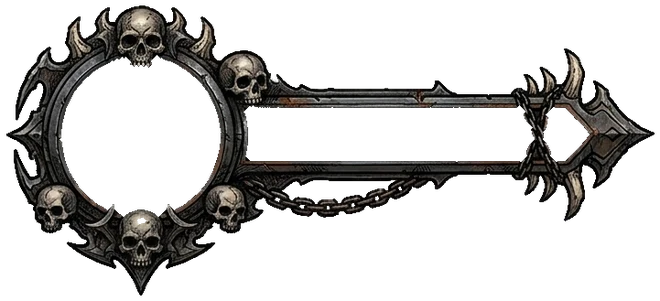
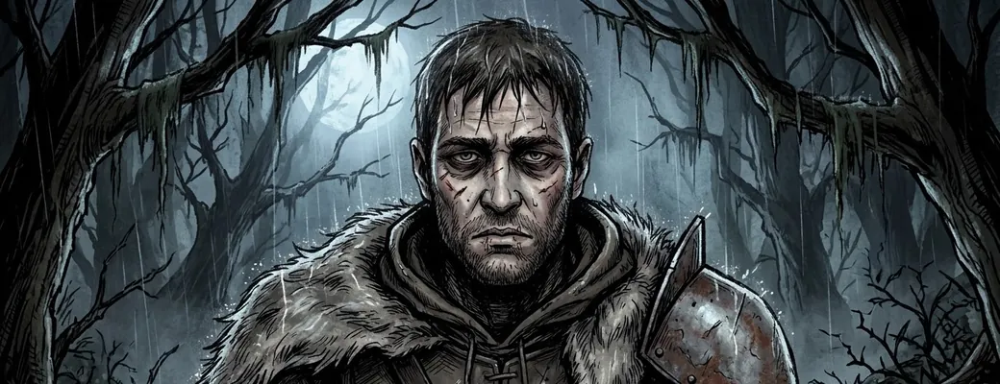
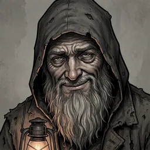
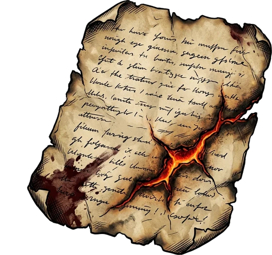

dotknij albo naciśnij spację

Noc przy chacie w lesie. Z mgły na skraju polany wychodzą potwory, najpierw jeden, potem coraz więcej. Dotrwaj do świtu.
Miecz ma wagę: najpierw zamach, potem cięcie po łuku, potem miecz wraca. Cięcia jedno po drugim nabierają rozpędu. Zablokuj tuż przed ciosem potwora, a sparujesz. Po ranie masz chwilę, żeby cięciami odzyskać część krwi. Klątwa w prawej ręce wali w ziemię i odrzuca wszystko wokół; jej pasek napełniają trafienia i zabici.
Miecz
Próbna wersja walki. Bohater, jego twarz i las w tle: obrazy i filmy z Gemini od Przemka. Chata: obraz z Gemini. Potwory, las na mapie i światło rysuje kod. Bohatera rysowanego kodem włączysz przyciskiem obok.
Wybierz jedno ulepszenie na resztę nocy.
Komputer: WASD, mysz celuje, lewy przycisk tnie (przytrzymany ładuje mocny cios), prawy blokuje, spacja to unik (trzymana dłużej: bieg), R to klątwa. Telefon: lewy kciuk chodzi, przycisk Tnij działa jak drążek: stuknij, przeciągnij, by celować, przytrzymaj, by naładować. Przycisk Unik przytrzymany dłużej to bieg. Klątwa: przycisk Klątwa, gdy fioletowy pasek jest pełny.
Miecz
Dotknij rzeczy, żeby ją obejrzeć. Kartki można przeczytać jeszcze raz.
Nóż, szydło i trochę drutu. Z tego, co zostało po potworach, da się coś zrobić. Ulepszenia zostają na następne noce.


Mgła cofa się do lasu. Przetrwałeś noc.